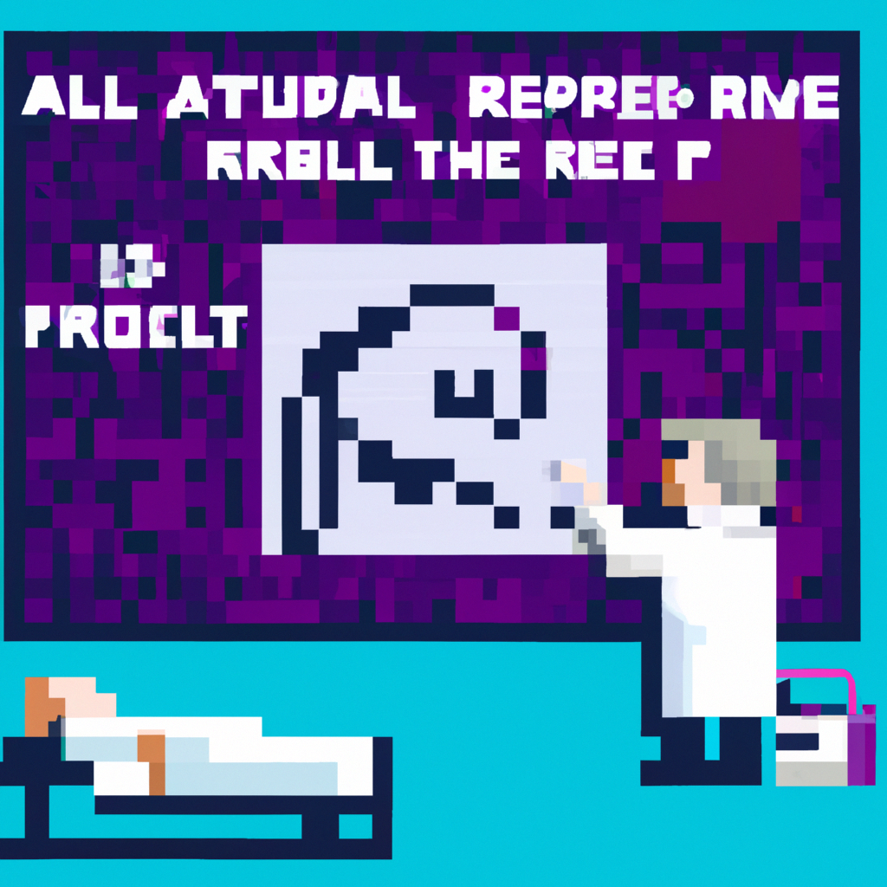

Why AI will never replace the radiologist
AI and machine learning have become increasingly prevalent in the medical field in recent years, and radiology is no exception. AI-driven technologies are being used to diagnose illnesses and detect abnormalities in medical imaging. However, there are still many reasons why AI will never replace the radiologist.
First, AI is not perfect. While AI can be used to detect anomalies and make diagnoses more quickly and accurately than humans, it is still not perfect. AI is only as good as its training data, and it can make mistakes when diagnosing illnesses. It also cannot replicate the critical thinking, clinical judgment, and experience of a radiologist.
Second, AI can only do so much. AI can help radiologists to identify and diagnose a wide range of medical conditions, but it cannot take into account the human element. This includes the patient’s family history, lifestyle, and other factors that a radiologist can take into consideration when making a diagnosis.
Finally, AI can never replicate the human touch. Diagnosing illnesses is not just about data points and algorithms – it’s also about building trust and understanding with the patient. AI can never replace the compassion and empathy of a radiologist.
In conclusion, AI and machine learning are powerful tools that can assist radiologists in making diagnoses and detecting abnormalities, but they will never replace the radiologist. AI can never replace the critical thinking, clinical judgment, and experience of a radiologist, nor can it take into account the human element and provide the same level of care and compassion.